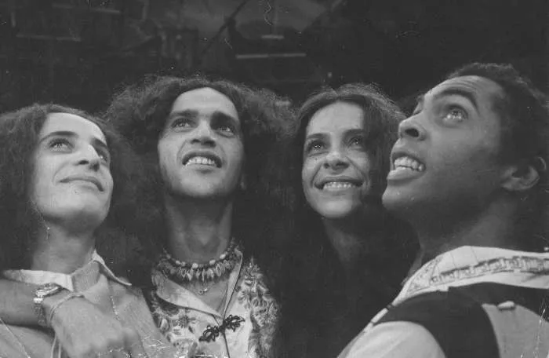

O MPB (Música Popular Brasileira), nasceu nos anos 60, como um novo estilo musical, foi um movimento cultural feito após o golpe militar que ocorreu em 1964. Surgiu no Rio de Janeiro com a segunda geração do bossa nova e com forte intervenção do folclore brasileiro. Tem características semelhantes com o samba e o bossa nova como a suavidade e o regionalismo presente nas canções desses gêneros.Os pioneiros desse estilo musical foram Chico Buarque, Elis Regina,Caetano Veloso, Milton Nascimento, Gal Costa, Gilberto Gil, Rita Lee e entre outros artistas que surgiram nessa período


Isadora Marcondes
Grande Rita Lee 👑, gosto muito desses todos, os maiores!
5/5